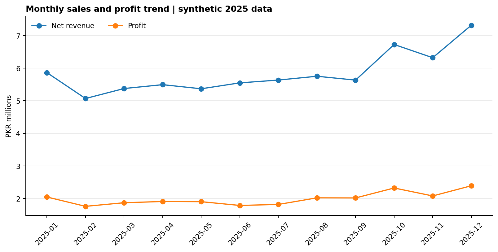
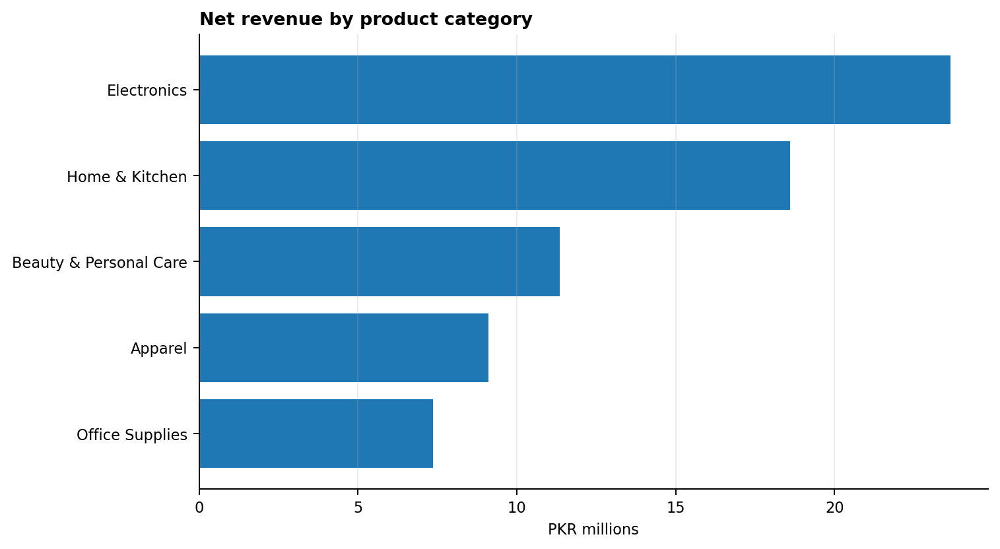
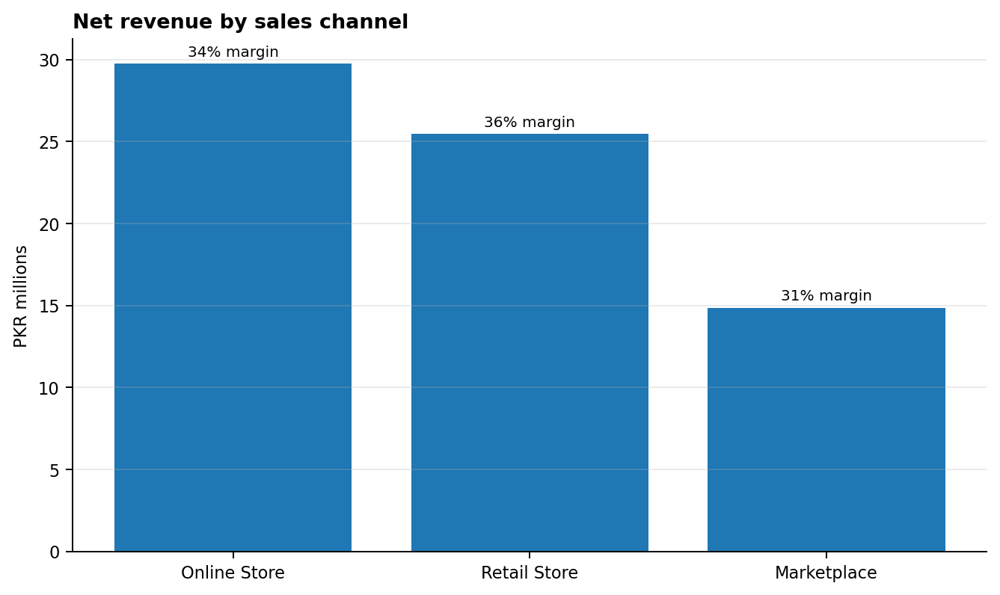
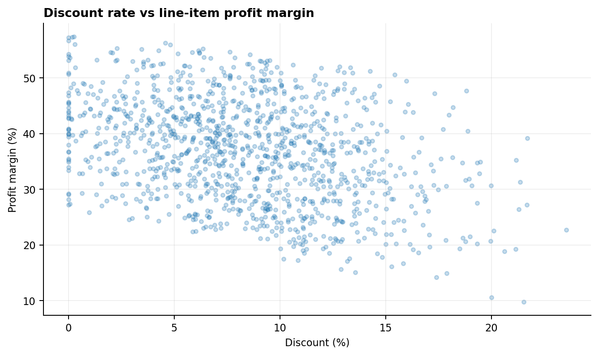

Business problem
A fictional multichannel retailer wants a clearer view of revenue, profitability, discounting, product categories, cities, and sales channels across 2025. Reporting revenue alone can hide margin pressure, so the analysis compares sales with simplified product cost and profit.
Illustrative dataset
The dataset includes fictional customer IDs, order dates, cities, channels, segments, product categories, units, price, cost, and discounts. It is reproducible from a fixed random seed. The modeled profit excludes fulfillment costs, taxes, returns, overhead, marketing spend, and payment fees.
Analytical workflow
- Generate and document the fictional transaction data.
- Validate fields and data ranges; parse dates and remove duplicates or incomplete rows.
- Derive gross revenue, discount amount, net revenue, modeled product cost, profit, and margin.
- Use Python and pandas to aggregate monthly, category, channel, and city KPIs.
- Write SQL queries for core business questions and provide DAX measures and a Power BI dashboard specification.
- Reconcile totals and state the limitations before sharing results.
Charts and exploratory analysis
Monthly revenue and profit

Revenue and profit move together in this simulated dataset, with stronger values in the final quarter by design. A real analysis would test for seasonality using multiple years of history.
Revenue by category

Revenue contribution is not identical to profitability. Product cost, discounts, returns, and fulfillment must be included for real margin decisions.
Revenue and margin by channel

The channel comparison makes a useful follow-up question visible: are margin differences driven by discounting, product mix, or omitted channel costs?
Discount versus line-item margin

This is descriptive, not causal evidence. High discount levels can mechanically reduce unit margin, but purchase volume and product mix would need careful analysis to assess promotion performance.
Results and limitations
The exact generated totals and summary tables are available in the repository. The findings are intentionally labeled illustrative. Because data patterns are simulated and cost coverage is simplified, do not claim real-world business impact or causal conclusions.
Power BI implementation
The build guide specifies a date table, DAX measures for revenue, cost, profit, margin, orders, units, average order value, and discount rate, plus a one-page dashboard layout and reconciliation checks.
After creating and reviewing the native .pbix report in Power BI Desktop, add a real Power BI screenshot or PDF export here and update the description to reflect the work actually completed.